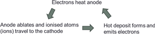

Plasma Modeling: Plasma-Induced Effects on Nanoparticles

One of the important observations from our experiments with the carbon arc is that rates of anode ablation and carbon deposition on a cathode are strong functions of such arc parameters as the anode diameter, inter-electrode gap size and arc current [Ng and Raitses, 2015], [Vekselman et al., 2017]. Our experimental data show that the carbon arc operates in two different ablation/deposition regimes: low ablation and enhanced ablation (see Fig. 1). These regimes are characterized by different rate of feedstock supply for nanomaterial synthesis.
Modeling of the arc for nanomaterial synthesis should be able to predict the feedstock profiles (carbon and carbon dimer profiles) for different arc configurations and operating conditions. We developed a model and incorporated it into a numeral code that can reliably predict arc properties and the feedstock profiles. Non-equilibrium effects are important for short arcs, therefore typical assumptions used for arc modeling, such as the local thermodynamical equilibrium (LTE), and the ionization and recombination balance (the Saha equation) cannot be used.

Figure 1. Rates of anode material ablation and carbon deposition at the cathode as functions of arc current; comparison of simulation results and experimental data.
The developed self-consistent arc discharge model consists of a fluid model for plasma-gas phase in the whole chamber (see Fig. 2) coupled with models of heat transfer in the electrodes. The non-equilibrium plasma model takes into account effects of ionization and thermal non-equilibrium, electron diffusion, thermal diffusion and effects of the near-electrode space-charge sheathes. Ablation of the electrodes, carbon material deposition, radiation from electrode surfaces, electron emission, volume ionization and surface recombination, Joule heating of the electrodes, are taken into account in the heat transfer model.
The arc model was incorporated into the 3D CFD-code ANSYS CFX, which was highly customized for this purpose. Accurate accounting for plasma-electrode interaction requires coupling of numerous physical phenomena, such as plasma current, emission current, ion current, sheath voltage drop, heat fluxes, ablation/deposition etc. Significant effort was required to elaborate numerical procedure for coupling of so many different parameters at plasma-electrode interfaces during implementation of the model into the code.
New boundary condition for ablation/deposition was implemented enabling automatic switch between these opposite processes. Simulations of flow pattern have shown that allowing for deposition of carbon at the cathode strongly affects the flow making it almost straight (from anode to cathode, Fig. 2b) and influences the carbon density profile, especially, in the region of nanoparticle synthesis.
Figure 2. Flow pattern and temperature profile in the reaction chamber (a) and carbon gas mass fraction profile in the arcing volume (b).
For benchmarking of the sheath model and plasma transport coefficients, 1D computations were performed and compared with results of previous numerical studies [Almeida et al., J. Phys. D: Appl. Phys. 41 (2008)].
Results of 2D computations were validated by comparison with experimental data. In Fig. 2 ablation and deposition rates obtained in the simulations and in the experiments are plotted as functions of arc current and compared with each other. Anode diameter was 6mm, inter-electrode gap was 1.5 mm in the both simulations and experiments. Good qualitative and quantitative agreement between the simulations and the experiments is observed. Note that is both experiment and simulations ablation and deposition rates are close, meaning that most of the ablated material goes straight to the cathode, in accordance with Fig. 2b.
Comparison of numerical simulation results and experimental data for electron number density profile in the mid-plane of the arc is shown in Fig. 3. Good agreement is observed.
Figure 3. Rates of anode material ablation and carbon deposition at the cathode as functions of arc current; comparison of simulation results and experimental data.
In Fig. 4, density profiles of C2 molecules, precursor for the nanotubes growth, obtained in the simulations and in the experiments are displayed. Good qualitative agreement between the modeling results and the experimental data is observed. The area occupied by the C2 molecules has bubble-like shape: there is almost no C2 in the center of the arcing volume where the gas temperature is high. Higher concentration of the C2 molecules is observed in the vicinity of the anode in the both simulations and experiment.
Figure 4. Density profile of C2 molecules: results of the simulations (a) and experimental C2 emission pattern obtained using planar LIF.
Previous Work
The most important finding from our recent experiments with the carbon arc is that that the formation of the carbon deposit on the cathode from gaseous carbon plays a crucial role in the operation of the arc, reaching the high temperatures (3200-3500 K) necessary for thermionic emission to take place even with low melting point cathodes [Ng and Raitses, 2014]. Based on observed ablation and deposition rates (Fig. 1), we theoretically explored the implications of the deposit formation on the energy balance at the cathode surface [Ng and Raitses, 2015].
Figure 5. Anode material ablation rate as a function of anode diameter.
Our results suggest that the nanosynthesis arc can operate in two different ablation/deposition regimes, one of which has an important contribution from latent heat to the cathode energy balance. This regime is characterized by the enhanced ablation rate, which may be favorable for high yield synthesis of nanomaterials. The second regime has a small and approximately constant ablation rate with a negligible contribution from latent heat. As the yield of nanomaterials is determined by ablation rate, the inclusion of latent heat in the energy balance is important for predictive modeling of nanosynthesis.
Based on results of these experimental and theoretical studies, we showed how the operation of the arc can be self-organized (Figs. 2 and 3). In the high ablation regime, electrons emitted from the carbonaceous deposit heat the graphite anode, which ablates. The carbon ions and atoms travel to the cathode and condense to form the deposit, which is at the high temperature necessary for thermionic emission to support the electron current in the arc (Fig. 2).

Figure 6. Schematic of inter-electrode plasma. Region I is the nearanode region and arc column. Region II is the near-cathode region with trapped ions.
Figure 7. Schematics of particles' circulationin the near-cathode region .
In the second ablation/deposition regime with a small and constant ablation rate, our model predicts circulation of the particles in the near-cathode region (Fig. 3) [Nemchinsky and Raitses, 2015], evaporation of the cathode material, ionization of evaporated atoms and molecules in the near-cathode plasma, return of the resulting ions to the cathode, surface recombination of ions and electrons followed again by cathode evaporation. In this arc regime, the ion acceleration in the cathode sheath provides the major cathode heating mechanism.